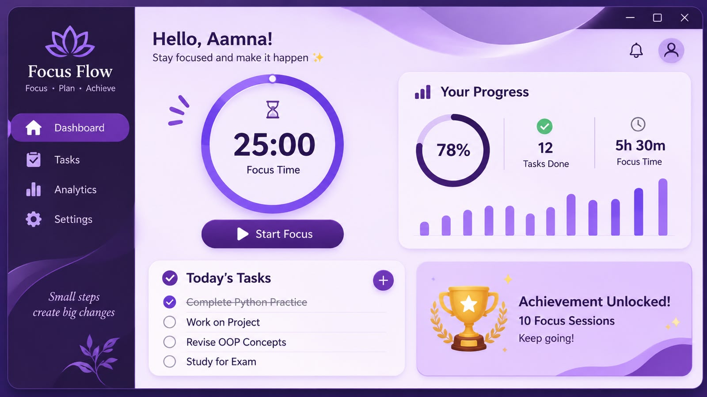
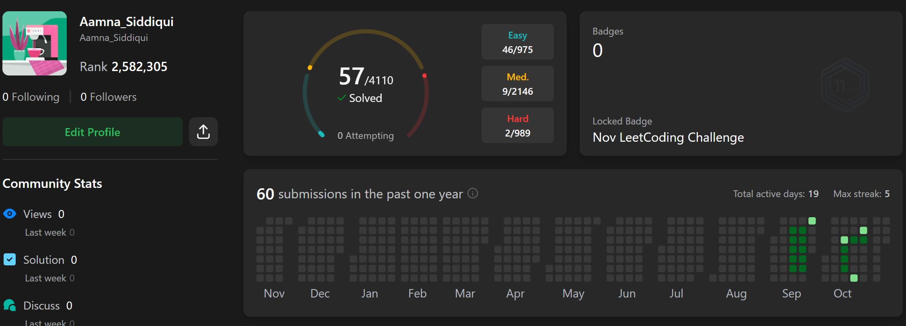
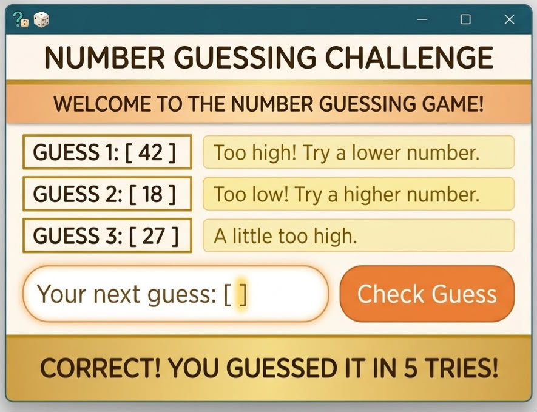
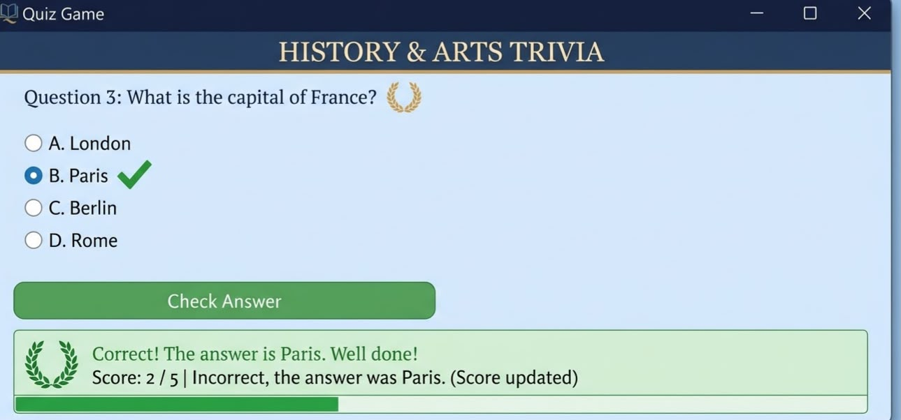
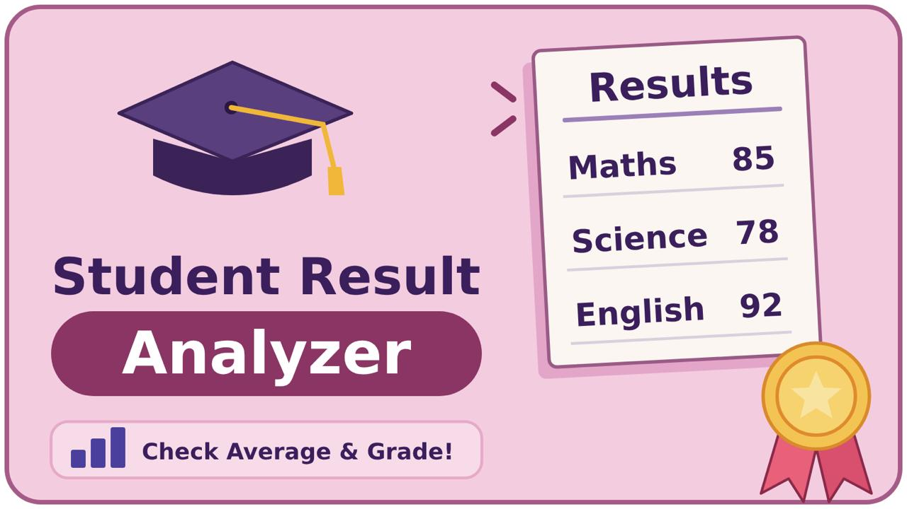

MY WORK
Projects & Practical Work
A collection of my programming projects, coursework and practical learning experiences as a Software Engineering student.
Featured Projects

FocusFlow
In ProgressA student productivity application designed to help users organise daily tasks and keep track of their progress.
Focus: Python, GUI Development, Task Management
View Details
This is a group project currently under development. It includes a task list, progress view and the ability to delete tasks. More features are being developed.

LeetCode Assignment
CompletedA programming fundamentals assignment consisting of 20 solved coding problems organised in a structured document.
Focus: Python, Problem Solving, Programming Logic
View Details
Completed a collection of 20 programming problems presented in an organised 20-page document, demonstrating understanding of fundamental Python concepts.

Number Guessing Game
CompletedAn interactive Python game where users try to guess a randomly generated number.
Focus: Random Module, While Loops, Conditional Statements
View Details
The program generates a random number and allows the user to make guesses. It uses conditions and an attempts counter to manage the game.

Quiz Game
CompletedA Python-based quiz application that presents questions and evaluates user answers.
Focus: Python, Lists, Functions, Conditional Logic
View Details
The project uses programming fundamentals to display quiz questions, check answers and calculate the user's final score.

Student Result Analyzer
In ProgressA proposed program to organise student marks, calculate averages and determine grades.
Focus: Python, Lists, Dictionaries, Functions
View Details
This is a planned practice project intended to strengthen my understanding of data organisation and result calculations.